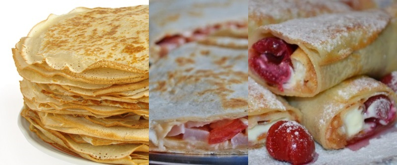

приготовление:
-
2 яйца взбить венчиком с 0,5 ч.л. соли и 1 ст.л. сахара. Влить 600 мл. молока, перемешать, всыпать 7-8 ст.л. с горкой муки, перемешать, добавить 1 ст.л. растительного масла, перемешать и оставить на 15 минут.
-
Жарить блины на сковороде без масла.
-
Блины можно употреблять с карамельным соусом, начинкой из творога, сахара и вишни в виде трубочек, а также можно сделать несладкие конвертики с ветчиной, сыром, маринованным огурцом и кетчупом.
-
Вишневая начинка: 400 гр. вишни без косточек порезать на половинки или четвертинки, положить в кастрюлю, добавить 1,5 ст.л. крахмала и 8 ст.л. сахара, поставить на средний огонь и помешивать до загустения.
-
Начинка из творога с изюмом: Изюм 100-200 гр. залить кипятком, промыть в холодной воде, подсушить. Лимон вымыть с мылом, просушить, натереть на самой мелкой терке, чтобы получить цедру (стараться не сильно задевать белый слой, а использовать только желтую кожуру). Взять творог 500 гр. 5-10% жирности, добавить в него 3-4 ст.л. сахарной пудры, 15 капель ванильного ароматизатора или 0,5 ч.л. эссенции, добавить цедру, изюм. Все перемешать. Если получилось слишком густо или сухо — добавить 1-3 ст.л. сметаны.